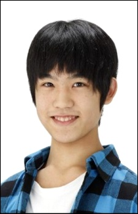

|
Kazato Tomizawa is a Japanese actor. He voiced several character in Final Fantasy series.
|
 |
|---|
| |
Makoto Kobayashi | Colorful | Makoto Kobayashi or I is a teenage boy who has commited suicide. He trying to find out to what sin he commited. |
Go Back to Main Page |
Go Back to Homepage |
|
|
|
OR |
|